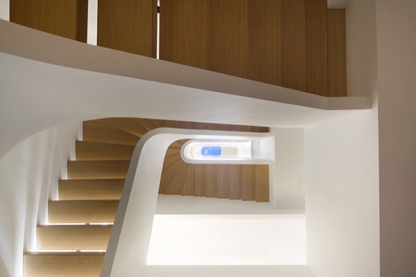

C 005
Upper West Side Residence
This landmark designated property turned underground hotel, was now the new home of a young family. In collaboration with design firm S4Architecture, the challenge of this very narrow townhouse was to create openness both vertically and horizontally. The vertical loft was born, connected through a coil-like stair allowing to maximize the private bedrooms on the upper floors and visually connect the public space on the lower levels. Fully glazed facades on both ground floor and penthouse allow for light flooded rooms and natural cross ventilation in hot summer days. Finishes such as white Thassos marble from Greece and natural white oak play in contrast to the historic exterior brick facade.
